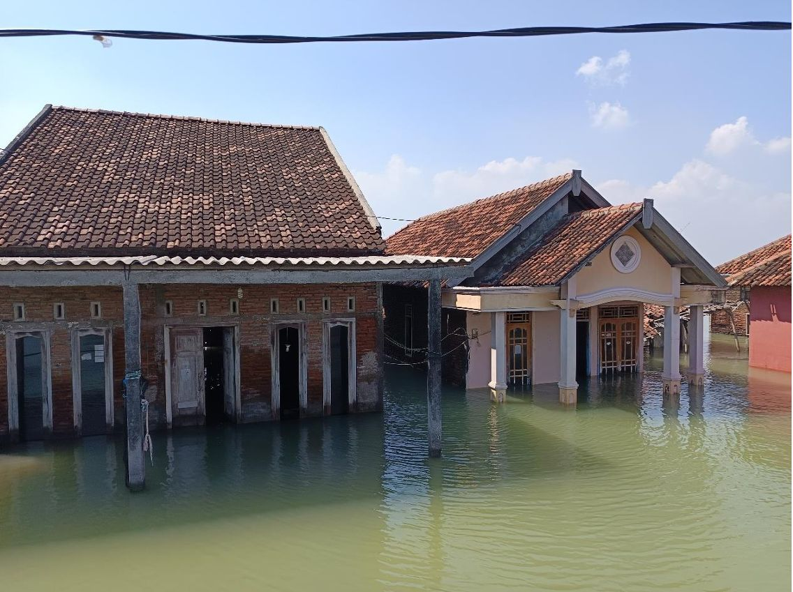
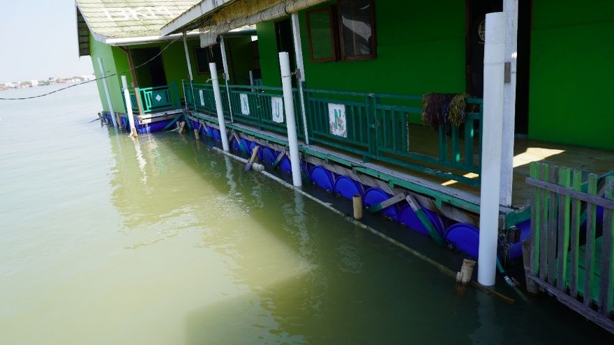

Rumah apung untuk desa yang tanahnya terus turun
Di Timbulsloko, Demak, bekas sawah, jalan, dan rumah kini berada di bawah air. Situs ini menyajikan penelitian tentang bagaimana penurunan muka tanah mengubah kedalaman air dan gelombang yang sampai ke rumah apung, serta apa yang perlu diperiksa saat membangun dan merawatnya.
Ilustrasi penampang membutuhkan JavaScript. Ringkasnya: di sekitar madrasah, dasar perairan berada sekitar +0,2 hingga −0,5 m terhadap LWS, sedangkan muka air berkisar 0 hingga 1,14 m di atas LWS. Kedalaman air di bawah bangunan karena itu berubah dari hampir nol sampai sekitar 1,6 m dalam siklus pasang surut.
Masalahnya: lantai yang tetap, air yang terus naik
Pesisir utara Jawa mengalami penurunan muka tanah (land subsidence), yaitu turunnya permukaan tanah akibat pemadatan endapan muda, kondisi geologi, dan aktivitas manusia, terutama pengambilan air tanah. Ketika tanah turun, air laut menjadi lebih tinggi relatif terhadap daratan: genangan makin sering, lalu menetap.
Rumah yang lantainya tertumpu pada tanah kehilangan jarak aman terhadap air sedikit demi sedikit. Banyak rumah di Timbulsloko sudah ditinggikan berkali-kali atau ditinggalkan. Bangunan apung mengikuti muka air melalui gaya apung, sehingga jarak lantai ke air dapat dipertahankan, asalkan daya apung, stabilitas, kekuatan rangka, sambungan, dan sistem penahannya tetap memadai.
Penurunan tanah juga membuat perairan dangkal menjadi lebih dalam. Di perairan dangkal, kedalaman mengendalikan seberapa besar gelombang yang dapat mencapai bangunan. Kaitan inilah yang diteliti.
Pelajari lebih lanjut tentang penurunan tanah dan rumah apung

Rantai yang diteliti
Penelitian menghubungkan lima mata rantai yang biasanya dikaji terpisah. Setiap mata rantai memerlukan data dan model yang berbeda.
- Penurunan muka tanahDasar perairan turun relatif terhadap muka air laut.
- Kedalaman bertambahDi lokasi yang sangat dangkal, perubahan kecil berarti perubahan kedalaman yang besar secara relatif.
- Gelombang berubahLebih sedikit energi gelombang yang pecah sebelum mencapai bangunan.
- Respons rumah apungGerak platform dan gaya pada drum, rangka, tali, dan tiang berubah.
- Desain dan perawatanKriteria desain, perkuatan, dan inspeksi disusun dari hasil analisis.
Lihat metodologi lengkap · Hubungan kedalaman–energi gelombang didukung studi lapangan di American Samoa (Barnes et al., 2024); besarannya tidak dapat dipindahkan langsung ke Demak.
Kondisi lapangan, singkatnya
- Bangunan
- 2 modul, sekitar 7 × 10 m dan 5 × 6 m Terukur
- Elemen apung
- Drum plastik nominal 200 L, horizontal, ±120 buah pada modul besar Estimasi visual
- Kerusakan yang pernah terjadi
- Tiang pemandu terlepas dan tali tambat putus Dilaporkan warga
- Elevasi dasar di sekitar bangunan
- +0,2 s.d. −0,5 m LWS Diolah
Elevasi terhadap datum LWS, bukan kedalaman air. - Pasang surut
- Tunggang teramati 88,6 cm selama 15 hari; HWS–LWS 1,14 m Terukur
- Gelombang lepas pantai
- Hs rata-rata 0,427 m (ECMWF 2006–2025) Diolah
Rata-rata di perairan lepas, bukan gelombang desain dan bukan kondisi di bangunan.
Sumber: Naskah paper kajian lapangan tim (2026); survei 16 Juni – 2 Juli 2026.

Yang dapat Anda lakukan di situs ini
- Menghitung daya apung drum
Perkiraan hidrostatik: kapasitas apung teoretis, sarat drum, dan kedalaman air pada pasang surut setempat. Rumus dan batasannya ditampilkan.
- Mengikuti panduan desain bertahap
Sepuluh hal yang perlu dipahami, dari survei lokasi sampai pemeliharaan, dengan pemisahan jelas antara prinsip umum dan temuan penelitian ini.
- Memakai daftar periksa inspeksi
Formulir yang dapat diisi di ponsel atau dicetak, berdasarkan kerusakan yang benar-benar terjadi di Madrasah Apung.
- Melihat skenario perubahan kedalaman
Bagaimana kedalaman air di lokasi berubah dalam 10 tahun untuk beberapa laju penurunan tanah dari literatur.
- Menelusuri data lingkungan
Rekaman pasang surut jam-jaman, batimetri, serta iklim angin dan gelombang 20 tahun.
- Mengikuti status penelitian
Apa yang sudah selesai, apa yang masih hasil awal, dan apa yang sedang dikerjakan.
Status penelitian
Survei lapangan dan pengolahan data lingkungan telah selesai. Pemodelan transformasi gelombang masih dilanjutkan, model global OrcaFlex sedang dikembangkan, dan analisis detail dengan Abaqus akan memakai hasil model global. Kapasitas desain, beban aman, kekuatan sambungan, dan ketahanan fatigue belum tersedia.